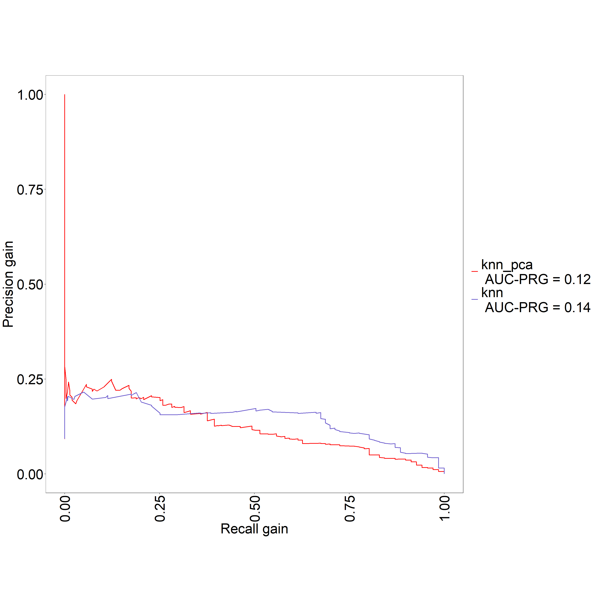

K Nearest Neighbors - KNN
A continuación aplicaremos un modelo knn o k nearest neighbors a nuestro grupo de datos. El algoritmo clasifica cada dato nuevo en el grupo que corresponda, según tenga “k” vecinos más cerca de un grupo o de otro. Es decir, calcula la distancia del elemento nuevo a cada uno de los existentes, y ordena dichas distancias de menor a mayor para ir seleccionando el grupo al que pertenece. Este grupo será, por tanto, el de mayor frecuencia con menores distancias.
El knn es un algoritmo de aprendizaje supervisado, es decir, que a partir de un juego de datos inicial su objetivo será el de clasificar correctamente todas las instancias nuevas.
Cargamos las librerias y los datos que utilizaremos para el entrenamiento, con el conjunto de train, y la evaluación del modelo con el conjunto de test:
library(class)
library(dplyr)
library(caret)
library (ROCR)
library(MASS)
library(hmeasure)
source("funcs.R")
data(Pima.te) dataTrain <- readRDS("datasetTrain.rds")
dataTest <- readRDS("datasetTest.rds")Procedemos a despejar de los dataset (train y test) la variable objetivo original SalePrice. De la cual ya hemos creamos la variable GrupoPrecio, del tipo categorica. Separando asi por una parte un grupo de casas baratas y otro grupo de casas caras.
Nuestro modelo clasificará casas entre estos dos grupos.
dataTrain <- dataTrain %>% dplyr::select(-SalePrice)
dataTest <- dataTest %>% dplyr::select(-SalePrice)Para este modelo se han elegido un grupo de caracteristica del dataset original. Son todas de numéricas y se han escogido debido a un analisis exploratorio de los datos previos y la realización de un modelo de randon forest que se explicara en otra sección del informe.
A continuación preparamos los dataset para entrenar el modelo y posteriormente evaluar como se comporta con el conjunto de test.
group <- c('TotalSF','LotArea','GrLivArea','GrupoPrecio')
dataTrain <- dataTrain %>% dplyr::select(group)
dataTest <- dataTest %>% dplyr::select(group)XTrain <- dataTrain %>% dplyr::select(-GrupoPrecio)
YTrain <- dataTrain$GrupoPrecio
XTest <- dataTest %>% dplyr::select(-GrupoPrecio)
YTest <- dataTest$GrupoPrecioInciamos el modelo entrenado con el conjunto de entrenamiento y evaluando como se comporta con el mismo. Si los grupos estan bien separados con una k mayor que uno deberia de dar un porcentaje de acierto alto, porque se evalua contra el mismo conjutno que usamos para entrenar el modelo.
model <- knn(XTrain, XTrain, cl = YTrain, k=3)tab_train <- table(model, YTrain, dnn = c("Actual", "Predichos"))
(tab_train)## Predichos
## Actual Barato Caro
## Barato 1528 90
## Caro 53 166accuracy(tab_train)## [1] 92.21557knn_train_error <- calc_error_rate(predicted.value=model, true.value=YTrain)
(knn_train_error)## [1] 0.07784431draw_confusion_matrix(tab_train, "Actual", "Predichos")
cm <- confusionMatrix(tab_train)
(cm)## Confusion Matrix and Statistics
##
## Predichos
## Actual Barato Caro
## Barato 1528 90
## Caro 53 166
##
## Accuracy : 0.9222
## 95% CI : (0.9089, 0.934)
## No Information Rate : 0.8606
## P-Value [Acc > NIR] : < 2.2e-16
##
## Kappa : 0.6546
##
## Mcnemar's Test P-Value : 0.002608
##
## Sensitivity : 0.9665
## Specificity : 0.6484
## Pos Pred Value : 0.9444
## Neg Pred Value : 0.7580
## Prevalence : 0.8606
## Detection Rate : 0.8318
## Detection Prevalence : 0.8808
## Balanced Accuracy : 0.8075
##
## 'Positive' Class : Barato
## Podemos observar que al acierto es alto pero no como deberia ya que intenta clasificar los mismos elementos que se usaron para entrenar. Esto muestra que posiblemente se tengan que volver a escoger un grupo de caracteristicas diferentes.
Procedemos a evaluar el modelo con nuestro conjunto de test y buscar el valor de k más optimo.
model <- knn(XTrain, XTest, cl = YTrain, k=3)tab_test <- table(model, YTest, dnn = c("Actual", "Predichos"))
(tab_test)## Predichos
## Actual Barato Caro
## Barato 616 77
## Caro 48 48accuracy(tab_test)## [1] 84.15716knn_test_error <- calc_error_rate(predicted.value=model, true.value=YTest)
(knn_test_error)## [1] 0.1584284draw_confusion_matrix(tab_test, "Actual", "Predichos")
cm <- confusionMatrix(tab_test)
(cm)## Confusion Matrix and Statistics
##
## Predichos
## Actual Barato Caro
## Barato 616 77
## Caro 48 48
##
## Accuracy : 0.8416
## 95% CI : (0.8142, 0.8664)
## No Information Rate : 0.8416
## P-Value [Acc > NIR] : 0.52385
##
## Kappa : 0.3441
##
## Mcnemar's Test P-Value : 0.01227
##
## Sensitivity : 0.9277
## Specificity : 0.3840
## Pos Pred Value : 0.8889
## Neg Pred Value : 0.5000
## Prevalence : 0.8416
## Detection Rate : 0.7807
## Detection Prevalence : 0.8783
## Balanced Accuracy : 0.6559
##
## 'Positive' Class : Barato
## Obtemos el hiperparametro k (el numero de vecinos que determinaran la clase que predice el modelo), probando una series de valores y evaluando cual da un % de acierto mayor.
i <- 1
k <- 1
for(i in 1:100){
model <- knn(XTrain, XTest, cl = YTrain, k=i)
tab_test <- table(model, YTest, dnn = c("Actual", "Predichos"))
k[i] <- accuracy(tab_test)
opt <- i
cat(opt, '=', k[i], '')
}## 1 = 82.25602 2 = 82.76299 3 = 84.15716 4 = 83.65019 5 = 84.41065 6 = 85.04436 7 = 84.66413 8 = 85.04436 9 = 85.04436 10 = 85.04436 11 = 86.31179 12 = 85.1711 13 = 85.1711 14 = 85.04436 15 = 85.42459 16 = 84.66413 17 = 85.04436 18 = 84.79087 19 = 84.91762 20 = 85.1711 21 = 84.53739 22 = 84.91762 23 = 84.66413 24 = 84.2839 25 = 84.91762 26 = 85.29785 27 = 85.29785 28 = 85.29785 29 = 84.91762 30 = 84.15716 31 = 84.91762 32 = 85.04436 33 = 85.1711 34 = 84.53739 35 = 84.66413 36 = 84.53739 37 = 84.66413 38 = 84.66413 39 = 84.53739 40 = 84.66413 41 = 85.04436 42 = 85.29785 43 = 85.42459 44 = 85.29785 45 = 85.04436 46 = 84.79087 47 = 84.79087 48 = 85.04436 49 = 84.79087 50 = 84.79087 51 = 84.41065 52 = 84.91762 53 = 84.53739 54 = 84.53739 55 = 84.53739 56 = 84.66413 57 = 84.79087 58 = 84.53739 59 = 84.53739 60 = 84.2839 61 = 83.90368 62 = 84.03042 63 = 83.90368 64 = 83.90368 65 = 83.90368 66 = 83.77693 67 = 83.77693 68 = 83.90368 69 = 83.90368 70 = 83.90368 71 = 83.77693 72 = 83.90368 73 = 83.90368 74 = 83.90368 75 = 84.03042 76 = 83.90368 77 = 84.03042 78 = 83.90368 79 = 83.77693 80 = 84.03042 81 = 83.77693 82 = 84.03042 83 = 84.03042 84 = 84.03042 85 = 83.90368 86 = 84.15716 87 = 84.15716 88 = 84.03042 89 = 84.03042 90 = 83.90368 91 = 84.15716 92 = 84.03042 93 = 84.03042 94 = 83.90368 95 = 83.65019 96 = 83.77693 97 = 83.77693 98 = 83.77693 99 = 83.90368 100 = 84.03042plot(k, type="b", xlab="K-Value", ylab="Accuracy level") Una vez obtenida la k más optima, evaluamos al modelo con el conjunto de test y con el valor de k que hemos obtenido. El modelo deberia de funcionar algo mejor.
Una vez obtenida la k más optima, evaluamos al modelo con el conjunto de test y con el valor de k que hemos obtenido. El modelo deberia de funcionar algo mejor.
model <- knn(XTrain, XTest, cl = YTrain, k=11)
saveRDS(model, "modelKNN.rds")tab_test_h <- table(model, YTest, dnn = c("Actual", "Predichos"))
(tab_test_h)## Predichos
## Actual Barato Caro
## Barato 636 80
## Caro 28 45draw_confusion_matrix(tab_test_h, "Actual", "Predichos")
accuracy(tab_test_h)## [1] 86.31179knn_test_h_error <- calc_error_rate(predicted.value=model, true.value=YTest)
(knn_test_h_error)## [1] 0.1368821cm <- confusionMatrix(tab_test_h)
(cm)## Confusion Matrix and Statistics
##
## Predichos
## Actual Barato Caro
## Barato 636 80
## Caro 28 45
##
## Accuracy : 0.8631
## 95% CI : (0.8371, 0.8863)
## No Information Rate : 0.8416
## P-Value [Acc > NIR] : 0.05178
##
## Kappa : 0.3824
##
## Mcnemar's Test P-Value : 9.226e-07
##
## Sensitivity : 0.9578
## Specificity : 0.3600
## Pos Pred Value : 0.8883
## Neg Pred Value : 0.6164
## Prevalence : 0.8416
## Detection Rate : 0.8061
## Detection Prevalence : 0.9075
## Balanced Accuracy : 0.6589
##
## 'Positive' Class : Barato
##